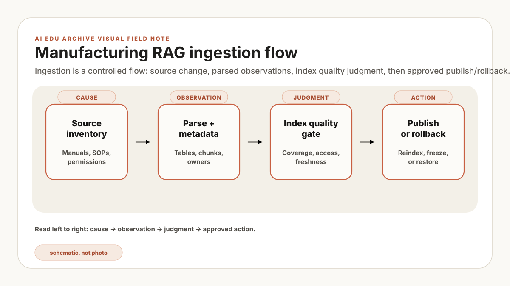

build_id=rag-index-2026-07-11-01 has an owner, source fingerprint, ACL snapshot, parser version, rejected-page count, and rollback target. If one of those fields is blank, the index is not ready material. Put the build on hold before spending time on embeddings.
Treat each index build as a controlled batch. Its inputs are a source export, owner approvals, revision and retirement metadata, an ACL snapshot, parser and chunker versions, and acceptance questions. Its outputs are a named index artifact and a reconciliation report that another engineer can inspect.
This article connects sealed-document RAG, chunking, and evaluation. The ingestion pipeline is where document authority, parse quality, access scope, and rollback become concrete records rather than assumptions.
Think of ingestion like incoming material inspection before a wafer lot enters the line. You do not throw unknown chemicals, unverified wafers, or unlabeled parts directly into a process chamber. You check label, lot, expiry, spec, owner, and route. RAG ingestion is the same habit applied to documents: before a SOP, alarm log, or maintenance note reaches the model, it needs identity, revision, permission, and quality checks.
Inventory before indexing
Do not begin with embeddings. Begin with a source inventory. For every source family, record owner, system of record, confidentiality level, update cadence, permission model, document type, and retirement rule. This is dull work, and it is exactly why the system becomes reliable later.
Constructed revision check Rev-07 kept winning, which first pointed to the vector index favoring its wording. The source inventory exposed the earlier snag: the rev-08 export had no effective-status field, so both revisions entered the current partition. The document owner identifies the released revision, the pipeline quarantines the ambiguous batch, and the manifest preserves the disposition. This is a constructed workflow, not a plant incident.
| Field | Why it matters | Example |
|---|---|---|
| Owner | Someone must approve inclusion, updates, and retirement. | Etch process owner |
| Cadence | Freshness tests depend on how often a source changes. | Weekly, per ECO, per shift |
| Permission model | Retrieval must not bypass source access rules. | Role, line, tool group |
| Retirement rule | Superseded documents must not answer as current. | Latest approved revision only |
The ingestion stages
A practical pipeline has seven stages. Each stage produces an artifact that can be checked, diffed, and rolled back.
- Discover: enumerate documents and capture metadata from the system of record.
- Authorize: snapshot permissions and decide whether the source is eligible.
- Parse: extract text, tables, headings, warnings, revision notes, and attachments.
- Normalize: convert local shorthand, units, revision labels, and document IDs into stable fields.
- Chunk: split content while keeping warnings, tables, and step dependencies attached.
- Index: build vector and keyword indexes with build IDs and source fingerprints.
- Validate: run freshness, permission, and retrieval smoke tests before promotion.
| Stage | Evidence retained | Hold the build when |
|---|---|---|
| Discover / Authorize | Source ID, owner, revision, classification, ACL snapshot. | The owner is unknown, approval is missing, or the ACL cannot be reproduced. |
| Parse / Normalize | Parse report, rejected pages, table and warning counts, normalized IDs. | A safety warning, unit, revision mark, or table relationship is lost. |
| Chunk / Index | Chunk lineage, source fingerprint, index build ID, model versions. | A chunk cannot be traced to its page and revision, or a protected chunk lands in the wrong partition. |
| Validate / Promote | Freshness, permission, retrieval tests and previous known-good build. | Any permission test fails, stale content wins, or rollback has not been exercised. |
Suppose a dry etch chamber clean SOP has a table that says "Do not open the chamber until pressure is below X" and the next page lists the exception flow. A naive chunker may split the warning, the pressure condition, and the exception into three unrelated pieces. A step-aware chunker keeps them together because, to an engineer, they are one operational unit. If those pieces separate, the answer may sound correct while quietly losing the safety condition.
{
"build_id": "rag-index-2026-07-11-01",
"source": "sop://etch/chamber-clean",
"current_revision": "rev-08",
"permission_snapshot": "acl-2026-07-11T00:00Z",
"parser_version": "docparse-1.4.2",
"chunker_version": "plant-step-aware-0.9",
"embedding_model": "local-embedding-v3",
"fingerprint": "sha256:..."
}Freshness and permissions
Two failures deserve special treatment: stale answers and unauthorized answers. Stale answers happen when the old source remains easier to retrieve than the new source. Unauthorized answers happen when a document permission model is copied imperfectly into the RAG layer. Both failures look like successful retrieval unless the pipeline tests them directly.
For freshness, keep adversarial tests: ask about a superseded revision and require the system to identify it as old. For permissions, run the same question under several roles and verify that the retrieved set changes. Apply access filters before context assembly; answer-layer prompting is not a repair for a retrieval permission failure.
Freshness is like checking whether the recipe loaded in the tool is the released recipe, not the one someone saved during last week's troubleshooting. Permissions are like badge access. If a person cannot enter a bay or open a controlled recipe file, the RAG system should not hand them that content just because the text matches their question.
Rollback is a feature
Hold: the pipeline owner quarantines a build when reconciliation is incomplete, parsing loses required structures, ACL tests differ from the source system, or revision conflicts lack document-owner disposition. Release: the RAG service owner promotes the named index after document, security, and domain owners approve their checks.
Rollback: retain the previous index, metadata store, ACL snapshot, and serving alias as one restorable bundle. On a stale-current or permission incident, the platform owner removes the new alias, restores the previous bundle, and records affected queries for review. Rebuilding later is remediation, not the rollback mechanism.
Limitations: successful ingestion does not prove retrieval quality or answer correctness. OCR can still corrupt symbols, source ACLs can be wrong, and an approved document can contain ambiguous instructions. Evaluation and user-facing citations remain separate controls.
| Record | Pass / continue | Stop / owner |
|---|---|---|
| Reconciliation | Discovered, accepted, rejected, retired, and duplicate counts balance to the source snapshot. | Counts do not balance; pipeline owner holds the batch. |
| Revision and ACL | Current status and role access match the system of record for sampled documents. | Any mismatch; document owner or IT/security resolves it. |
| Rollback drill | The previous named bundle can be restored and its manifest verified before promotion. | No restorable target; service owner blocks release. |
| Limit | The result covers this source family, export window, and parser version. | Do not infer coverage for another repository, OCR path, or permission model. |
Once the supply batch can be reconciled and rolled back, move to the plant RAG evaluation harness. That is where the named index is challenged on freshness, permissions, retrieval, and refusal before it receives traffic.